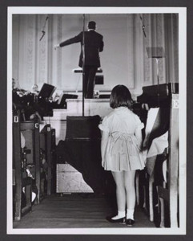

|
Notice: Library of Congress research centers are closed to the public (including researchers and others with reader identification cards) until further notice to reduce the risk of transmitting COVID-19 coronavirus. All Library-sponsored public programs are also postponed or cancelled until further notice. Online resources and reference services, such as Ask a Librarian, will continue to be available during this time. For more information, see: www.loc.gov/coronavirus. | ||
|
NEW!  K-12 Music Education Resources @ the Library of Congress Featured Video |
Hours: Location: ATTENTION:
Before Visiting the Performing Arts Reading Room: All researchers are advised to write or telephone the Performing Arts Reading Room prior to visiting. Many collections are stored off-site, and advance notice is needed to retrieve these items for research use. Ask
a Librarian |
| The Performing Arts Reading Room is the access point for the collections in the custody of the Music Division at the Library of Congress. Numbering approximately 20.5 million items and spanning more than 1000 years of Western music history and practice, these holdings include the classified music and book collections, music and literary manuscripts, iconography, microforms, periodicals, musical instruments, published and unpublished copyright deposits, and close to 500 special collections in music, theater, and dance. | ||
| The
Library of Congress >> Researchers October 27, 2020 |
Legal | External Link Disclaimer |
Contact
Us: Ask a Librarian |